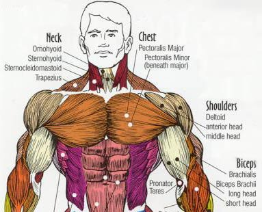
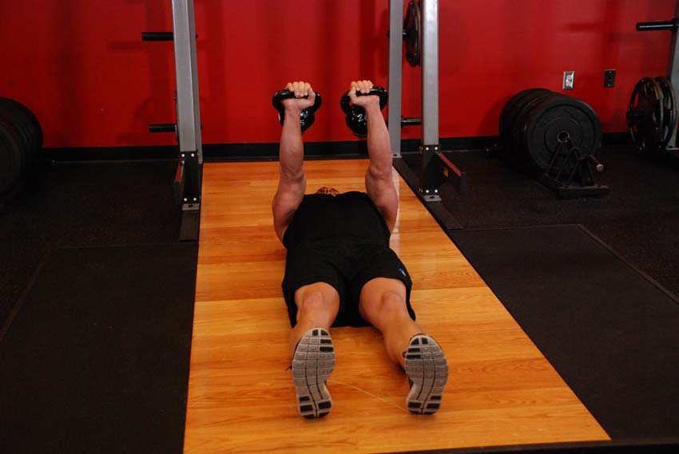
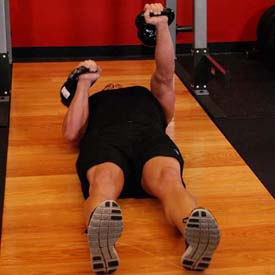
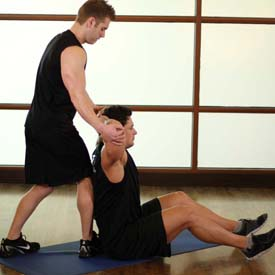
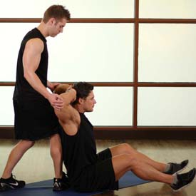
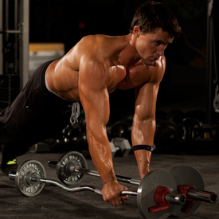
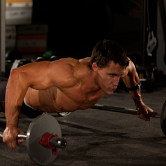
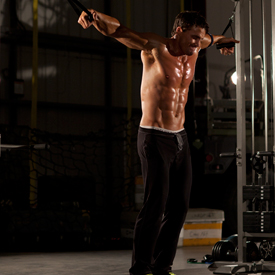
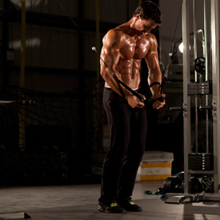

<!DOCTYPE html PUBLIC "-//W3C//DTD XHTML 1.0 Strict//EN" "http://www.w3.org/TR/xhtml1/DTD/xhtml1-strict.dtd">
<!--
Design by Free CSS Templates
http://www.freecsstemplates.org
Released for free under a Creative Commons Attribution 2.5 License

Name       : Open-Air
Description: A two-column, fixed-width design with dark color scheme.
Version    : 1.0
Released   : 20120818

-->
<html xmlns="http://www.w3.org/1999/xhtml"/>
<?php
session_start();
include('mygymdbConnect.php');
include('SignUp.php');
?>
<html>
    <head>
        <title> MyGym</title>
        <div style="position :absolute;top:20px;left:40px">
            <p><h2>MY<br/> 
                    GYM 
                    <br/></h2></p></div>
        <div style="position: absolute ;left:  200px; top: 20px;"> </div>
        <div style="position:absolute;top:37%;left:35%"/>
        <link href="http://fonts.googleapis.com/css?family=Oswald:400,300" rel="stylesheet" type="text/css" />         

        <link href="style.css" rel="stylesheet" type="text/css" media="screen" />
        <a href="home.php" style="text-decoration: none;color: black;font:serif;font-weight: bold;  ">Home |</a>
        <a href="About.html" style="text-decoration: none;color: black;font:serif;font-weight: bold;  ">About |</a>
        <a href="sign up.html" style="text-decoration: none;color: black;font:serif;font-weight: bold;  ">Sign up |</a>
        <a href="Activities.html" style="text-decoration: none;color: black;font:serif;font-weight: bold;  ">Activities |</a>
        <a href="Trainers.html" style="text-decoration: none;color: black;font:serif;font-weight: bold;  ">Trainers |</a>
        <a href="classes.html" style="text-decoration: none;color: black;font:serif;font-weight: bold;  ">Classes |</a>
        <a href="Training.html" style="text-decoration: none;color: black;font:serif;font-weight: bold;  ">Train |</a>   

    </head>

    <body>
        <div style="position: absolute;left: -300px">
            <table  cellpadding="10" cellspacing="10" height="400px" width="1200px">
                <tr><td></img></td>
                    <td><b>Description</b><br></br>The muscular system of the chest and upper back is obviously defined
                        by the pectoral, deltoid, teres minor, teres major, latissimus dorsi and the trapezius muscles.
                        However, digestive, circulatory, and respiratory muscular systems within the chest, 
                        while less obvious, have substantially greater impact on the organism as a whole.
                    </td></tr>
            </table></div>
        <div style="position: absolute;left: -200px;top: 500px" >
            <table border="2"  cellpadding="10" cellspacing="10" align="center">
                <tr><td><b>EXERCISES</b></td></tr>
                <tr><td></img></br>
                        </img></td>
                    <td><b>Alternating Floor Press</b>
                        </br>
                        1-Lie on the floor with two kettlebells next to your shoulders.
                        </br>2-Position one in place on your chest and then the other, gripping the kettlebells on the handle with the palms facing forward.
                        </br>3-Extend both arms, so that the kettlebells are being held above your chest. Lower one kettlebell, bringing it to your chest and turn the wrist in the direction of the locked out kettlebell.
                        </br>4-Raise the kettlebell and repeat on the opposite side.

                    </td>
                </tr>
                <tr><td></img></br>
                        </img></td>
                    <td><b>Behind Head Chest Stretch</b>
                        </br>1-Sit upright on the floor with your partner behind you.
                        </br>2-Place your hands behind your hand, and push your elbows back as far as you can. Your partner should hold your elbows. This will be your starting position.
                        </br>3-Gently attempt to pull your elbows forward with your hands still behind your head for 10 or more seconds. Your partner should prevent your elbows from moving.
                        </br>4-Now, relax your muscles and have your partner gently pull the elbows back as far as it comfortable for you. Be sure to let your partner know when the stretch is adequate to prevent overstretching or injury.
                    </td>
                </tr>
                <tr><td></img></br>
                        </img></td>
                    <td><b>Bodyweight Flyes</b>
                        </br>1-Position two equally loaded EZ bars on the ground next to each other. Ensure they are able to roll.
                        </br>2-Assume a push-up position over the bars, supporting your weight on your toes and hands with your arms extended and body straight.
                        </br>3-Place your hands on the bars. This will be your starting position.
                        </br>4-Using a slow and controlled motion, move your hands away from the midline of your body, rolling the bars apart. Inhale during this portion of the motion.
                        </br>5-After moving the bars as far apart as you can, return to the starting position by pulling them back together. Exhale as you perform this movement.
                    </td>
                </tr>
                <tr><td></img><br></br>
                        </img>  </td>
                    <td><b>Cable Iron Cross</b>
                        </br>1-Begin by moving the pulleys to the high position, select the resistance to be used, and take a handle in each hand.
                        </br>2-Stand directly between both pulleys with your arms extended out to your sides. Your head and chest should be up while your arms form a “T”. This will be your starting position.
                        </br>3-Keeping the elbows extended, pull your arms straight to your sides.
                        </br>4-Return your arms back to the starting position after a pause at the peak contraction.
                        </br>5-Continue the movement for the prescribed number of repetitions.

                </tr>
            </table>
        </div>
    </body>
</html>